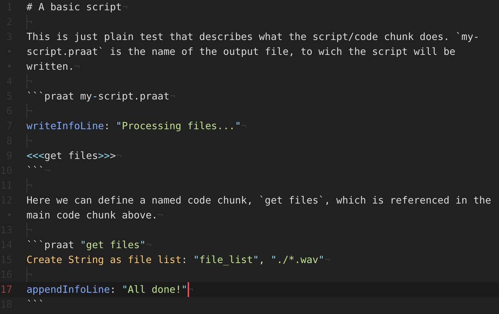

Literate programming with Praat
This post quickly illustrates how to apply a literate programming workflow to Praat scripting. To be able to reproduce the steps described here you need the latest version of pandoc and the Literate Markdown Tangler (lmt, you will need to install Go first to install lmt).
1 What is literate programming?
In literate programming, one writes both code and plain text which explains what the code does in a single document. Natural language and programming language are interleaved in the document in a way that is reader-oriented, rather than software oriented. So, for example, the code can be included in an order that is different from the order it should have had the document been a script.
This programming paradigm allows developers to focus on documenting their code in a more natural way. This has the double advantage of aiding a new user in understanding what the code does and helping the author of the code to develop the code following a logic that can be different from the logic of the code’s programming language.
In general, from a literate source file (a file containing both natural language and programming code) it is possible to obtain a documentation file (by the process called weaving) and a script file (by the process called tangling) which is interpretable by the target programming language.
Markdown, a simple but effective mark-up language, allows mixing natural language (with rich formatting) and code in a single document. Pandoc is a software utility which can convert documents from and to a variety of formats. The conversion relevant to us is from Markdown to PDF. Converting Markdown to PDF corresponds to the weaving process mentioned above, i.e. creating a richly formatted documentation of the code. Pandoc has syntax highlighting capabilities, and Praat syntax is supported, so that your documentation will also be easier to interpret. The Literate Markdown Tangler, by Dave MacFarlane, is a software written in Go that instead can be used to tangle (extract) the code from the source file into a scripting file.
Pandoc and lmt can be used together to develop a literate programming workflow with Praat scripting. This means that you can develop a Praat script by laying out the pieces of the script in the source file and explain what the various parts of the script do in using natural language. lmt further allows the user to create “blocks” of code that can be referenced in other blocks and reused. If you wanna generate a PDF version of the documentation, you can convert the source file to a PDF with Pandoc.
The figure at the top of this post shows an example of a literate Praat source file.
The following sections will point you to the software and files that need to be installed/copied and will show how to use literate programming with Praat scripting.
2 Necessary software
- You need to install the latest version of Pandoc, which can be found here. After installing, be sure you can run this command from your command line GUI:
pandoc --version. If a version is returned, Pandoc is working on your system. - Install Go from here and set it up, then download and install
lmtfrom here. - Download and unzip the content of this zip to a convenient directory (usually, in
.pandoc/in your user folder). This folder contains the files which allow Pandoc to highlight Praat syntax.
3 Literate Praat
To generate the Praat script and its documentation, you have to:
- Write your script in a Markdown source file with Praat code enclosed in code chunks that follow the format required by
lmt. - Use
lmtto tangle the code from the source file into a standalone Praat script. - Use pandoc with a custom syntax highlighter to generate the documentation of the script.
3.1 The source file
The source file will contain text, Markdown markup, and code enclosed between back-ticks. The following is an example of how such file would look like.

3.2 Tangle the code
To tangle the code into a standalone Praat script, run the following line from your command line GUI, where my-script.praat.md is your Praat source file:
lmt my-script.praat.mdThe scripts defined in the source file will be output in the same directory as the source file (to learn more on how this works, check the lmt README on GitHub).
3.3 Weave the documentation
To weave the documentation, run the following by replacing the syntax definition path with the path to the pandoc-praat/ folder on your computer:
pandoc -f gfm -o doc.pdf script.praat.md -N --syntax-definition=<your-path-here>/pandoc-praat/praat.xmlThis line of code tells Pandoc to convert from Markdown to PDF and where to find the files for highlighting Praat code.
A .pdf file named doc.pdf containing the documentation of the script will be created when the line is run.
Citation
@online{coretta2019,
author = {Coretta, Stefano},
title = {Literate Programming with {Praat}},
date = {2019-03-21},
url = {https://stefanocoretta.github.io/posts/2018-12-26-literate-programming-with-praat/},
langid = {en}
}